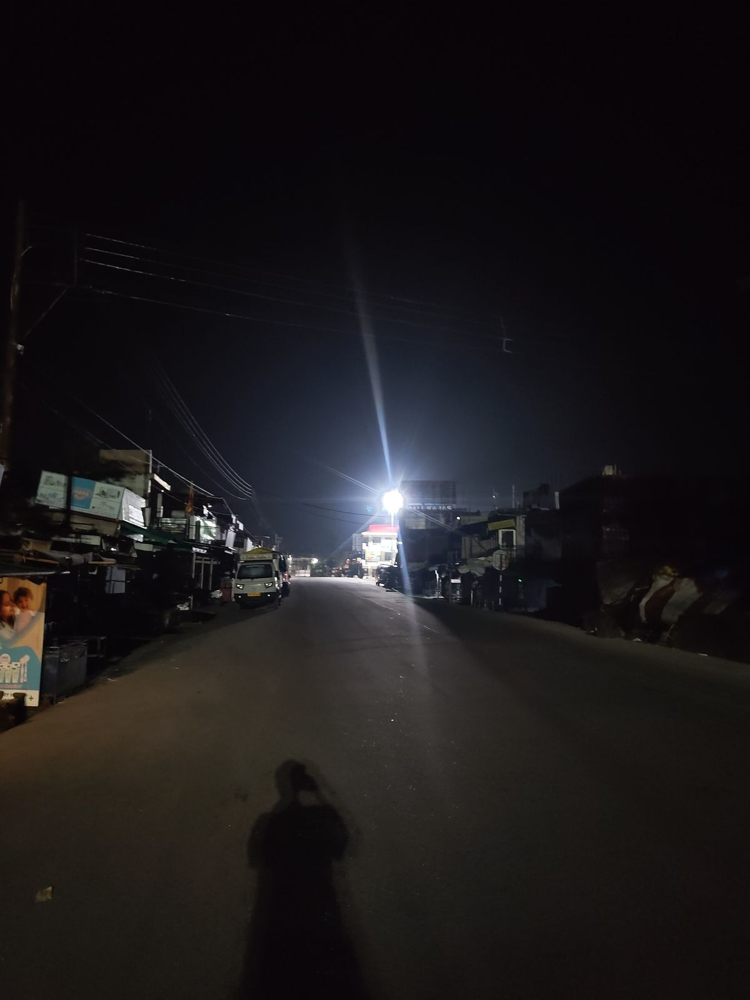
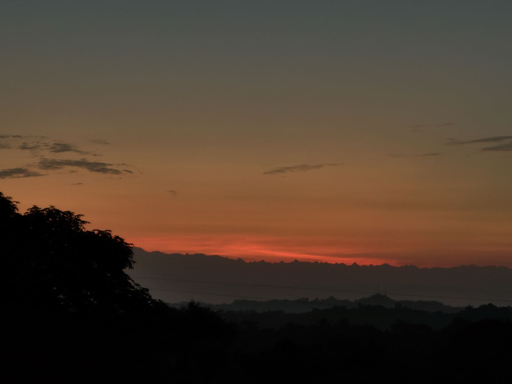
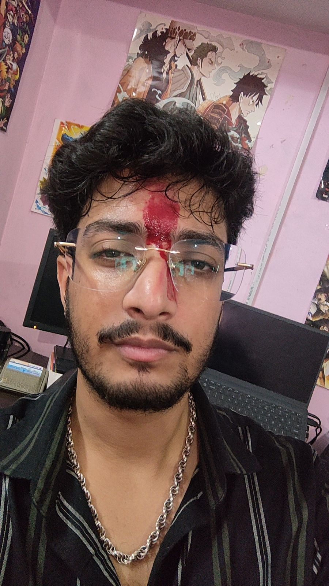
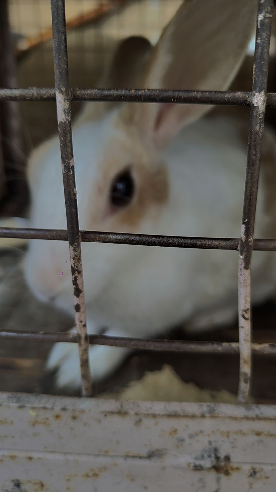
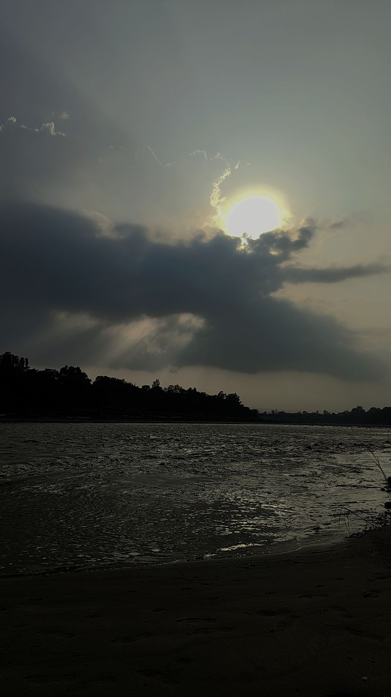
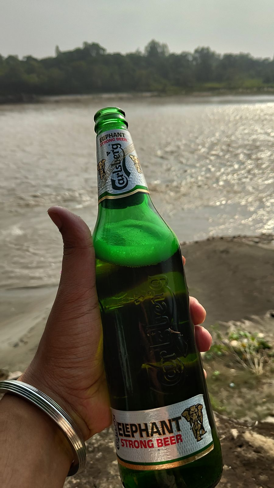
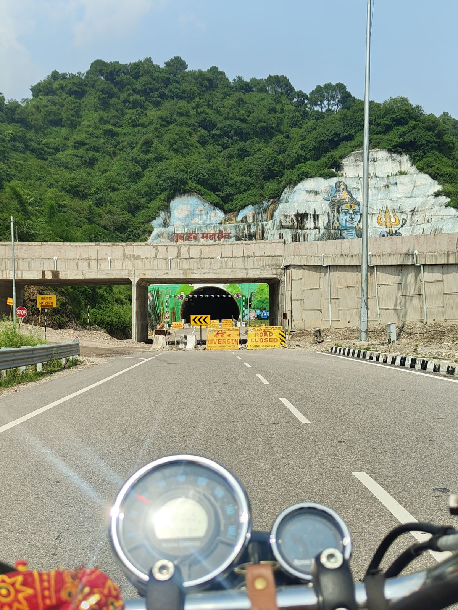
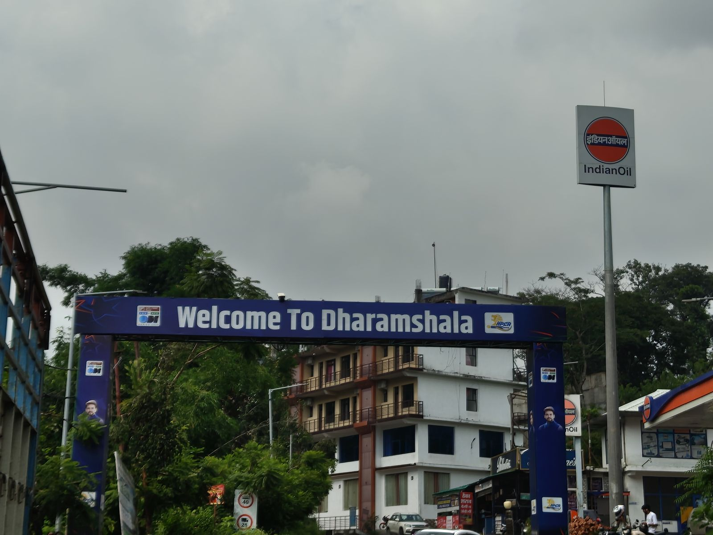
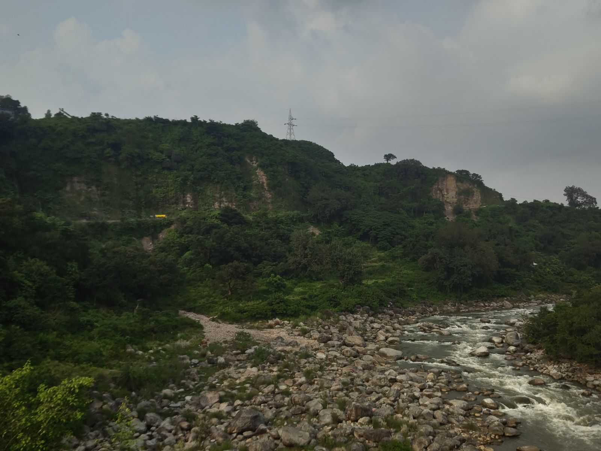

24 to 30 August 2026The week I built this, and the trip I did not go on
PUBLISHED 31 AUGUST 2026
Last week ended with me getting on a bus at Chandigarh at five to two in the morning. I said I would tell you how that finished. This is that.
Four in the morning at Amb
The bus went as far as Amb, which is about twenty kilometres from my house. At no point while booking it did I think about how I was going to cover those twenty kilometres at that hour.
It dropped me at four. There was not a soul in sight. Not a person, not a street dog, nothing.

So I went and stood at the Amb bus stand and waited for anything going in my direction. Forty minutes, nothing. By then other people had turned up, some waiting for buses and some out on a morning walk, which is a thing I also aspire to do soon.
I was tired enough from the weekend that I started asking for lifts. No luck there either.
Then at quarter to five a tuk tuk, idk what it is actually called, that electric rickshaw thing, pulled in to drop somebody at the stand. I asked him if he would take me to Chintpurni fully expecting a no, and he said yes. We left at ten to five and thirty minutes later I was at Chintpurni bus stand, and I took a cab home from there because I was in no condition to walk even one kilometre.
Half five, home. What greeted me was my mum, just woken up, and the sun coming up behind the mountains.

I had a bath while she made me maggi. I ate it. By six I shut down. One second I was in my bed and the next it was 12:47 and Alexa was trying to get me up for my shift.
I logged in, did my reports half asleep, and somehow got through the day. Then some doomscrolling, and the food blog idea started taking hold properly, and I told myself I would deal with it tomorrow. Before bed Gagan called, or I called him, and I talked him through the whole weekend.
Tuesday
Twelve in the morning to 12:50 in the afternoon. I am fairly confident I could have slept longer given the chance, but somebody needs to do the work.
Brushed, logged straight in, ate something that was an amalgamation of breakfast, brunch and lunch, did the daily reports, and then I was free.
So I started on the food blog. Did the ratings, wrote about the places. And then it was night. Damn, I did not know blogs needed this much dedication.
By the end of it the raw data was done and I knew what I wanted from a website, so I went and bought the domain. It was already late and I wanted to be up early, so the rest got pushed to Wednesday.
Wednesday, and a record
I woke up at eight. I think that is the earliest I have got up in anything I have written on this site so far.
I dropped my sister at the spot where her school bus comes, because apparently teenagers these days cannot walk two hundred metres. In my day we used to walk mountains.
Then a shower, food, and straight onto the laptop putting the site together. I did log into my job somewhere in there, but that day the blog was my real job.
By evening everything was sorted and three reviews were finished. I put the link on my Instagram story and for the first time felt like I had done something worth the time.
Meghalaya
Somewhere in the middle of writing and posting, Gopika bhabhi texted asking if I wanted to come to Meghalaya with them the following Tuesday.
My first instinct was yes. I just had to clear it at home and at work.
My mum was more than happy to let me go. I was excited, like very very excited. Spontaneous things like this are what I love.
My manager said give me until nine and I will come back to you.
Now, having read my previous notes you would think I get every leave I ask for. Not this time. A week off at that notice was too short and the answer was no.
I was sad about it, but mostly I was angry.
I replied to bhabhi that I could not come. Everything I had felt about putting the site up that day was cancelled out by a trip being cancelled. Frustrated, obviously, I slept.
Thursday
Awake at eight. That is twice in a row.
Lying there the night before failing to sleep I had decided I was going to write weekly notes as well, not just the food.
So after dropping my sister I went and bought coffee, had breakfast, and then a mug of black coffee, which carried me right up to my shift. Nothing else worth reporting happened that day, and I posted my first weekly note.
It was a nice experience. After the day before, writing the note helped ground me. Then, after talking to Hadesh, or fighting with him rather, I spent the evening tweaking the site and just thinking. Idk what about. Just thinking.
Later my sister and I went to the market to buy things for Rakhi. I tried to sleep at eleven and was still awake at twelve.
Friday, Rakhi
Everyone was up early and we were all ready by half eight. My bua was coming, not the Delhi one, the Chandigarh one, so we waited a bit and she got there at quarter past nine and we celebrated rakhi.

Then a cup of black coffee, and back to the blogs, the Delhi ones this time. They were ready by the time my shift ended and I put them up.
At half eight in the evening my cousin Pranjal called and asked if I could come to his place the next day. I said yes. Being a weekend plan, I did not have to ask my manager for anything.
I told my mum I was going, and then talked to Gagan, who has caught eye flu or something, so we do not know if he is going to make it.
Slept at eleven. This time I was not still awake at twelve. I think the sleep cycle is being repaired.
Saturday
Half six in the morning and not because of Alexa. My eyes just opened. The sleep was finished.
So I went and woke my sister up, because if I am awake she needs to be.
I got ready and left at quarter past nine with my dad, who dropped me at the bus stop. I took the first bus going the right way, which only went as far as Dehra, ten or fifteen kilometres short of my Massi's place in Jawalaji. I rang Pranjal from the bus to come and get me, and we got to Dehra at about the same time.
On the way we picked up kulchas from a roadside cart and had a chat with an uncle who was standing there.
We reached Massi's by twelve and caught up with her and with Appu di.

Then Pranjal and I started planning the evening getaway. By evening getaway I mean a beer or two and a view.
And that is what it was. Pranjal took me to a spot he knew, by the river, and we had beers and pizza and rolls and garlic bread and talked.


On the way back we had gol gappe and got biryani packed for Appu di.
That night I started writing the bachelor party note, and by the time it was finished it was one in the morning. I put it up and slept.
Sunday
Pranjal had to get his bike serviced, so after breakfast we went straight there. There was time before our turn so we drove around nearby, and by the time we got back they were ready for us.
While the bike was in there I made a call I did not want to make. Sometimes you have to do what you have to do.
The whole time we had been working out what to do next, and a ride to Dharamshala was too good to pass up. So the moment the bike was done we left.

Great views the whole way. By the time we got there the rain was almost on us.

We got KFC from Maximus Mall and the usual from the shop by it, and then drove back.

The rain caught us just before we got home and went from a drizzle here and there to a full shower. We were soaked by the time we got in. The thing is, I am soaked right now as well, writing this on Monday, but that is next week's story.
I had a bath, we had dinner, and then I sat with Appu di and made her read every single thing I have put on this site.
After some reading and talking I somehow got her to start writing something herself, a blog or a diary, idk which. I do not know whether it will stick, but she did start.
Then Instagram until half eleven, at which point I thought I would ring Gaurav, fully expecting him not to pick up because apparently he is so busy. He picked up. Gagan rang at about the same time so I added him in, and the three of us talked for an hour and a half. Time just goes with those two.
Gaurav had a lot to say and a lot to catch up on, having been off skipping for a while. I suppose that is what a relationship does to you.
Somewhere in the middle of it Gagan and Gaurav got onto how you pronounce the word "call" and decided that neither of them can say it properly. I did not understand a word of what they were on about. They told me I say it fine, and I was content with that.
Then I slept.
Waking up
This is the week the thing you are reading came into existence. On Monday it was an idea I kept telling myself I would get to tomorrow. On Tuesday I bought the domain. By Wednesday evening three reviews were up, on Thursday the first weekly note went up, and by one in the morning on Sunday there were four of them.
I had been looking for the motivation to start something like this for a while, and somewhere along the way I found it. I am not going to look at it too closely in case it stops working.
I got up before eight on three days this week. Wednesday at eight, Thursday at eight, and Saturday at half six with nothing set and nobody waking me. On the Friday I went to bed at eleven and stayed there. I have spent about two years telling people, and telling myself, that something is broken with my sleep. It turns out what was broken was that I did not have anything I wanted to get up for.
And then on Sunday night I sat and watched Appu di read the whole thing, start to finish, in front of me. By the end of it she had started writing something of her own. I have no idea whether she keeps it up. But I built this so that a week would not just disappear, and the first thing it did was get somebody else to try the same. That is more than I was expecting out of seven days.